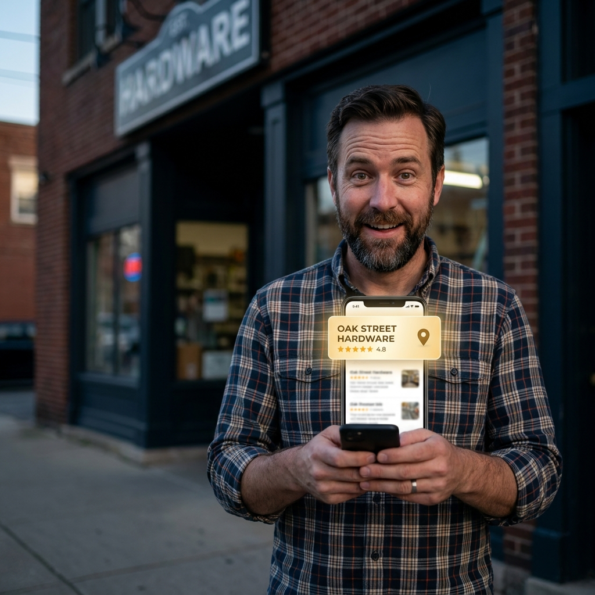
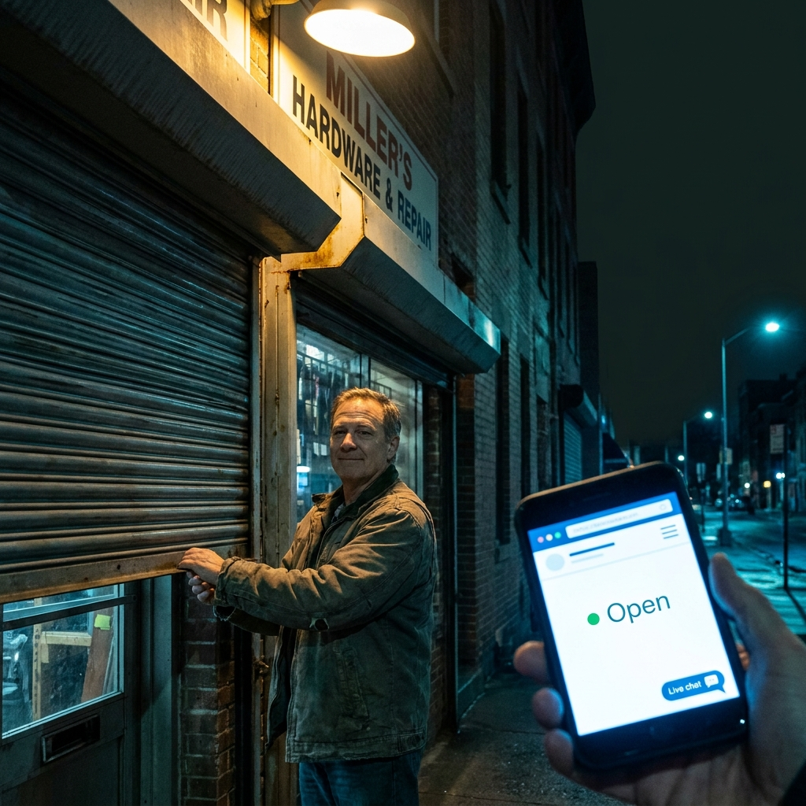
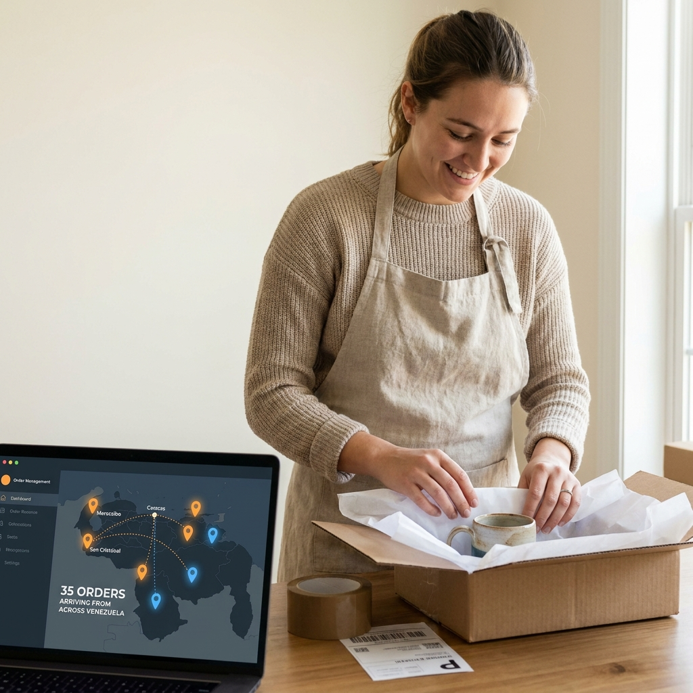
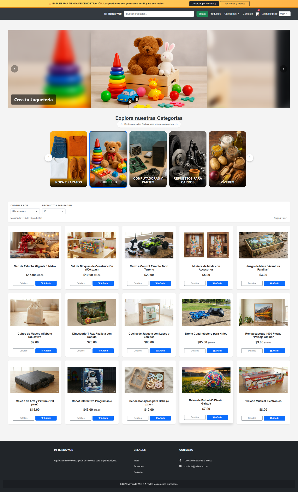
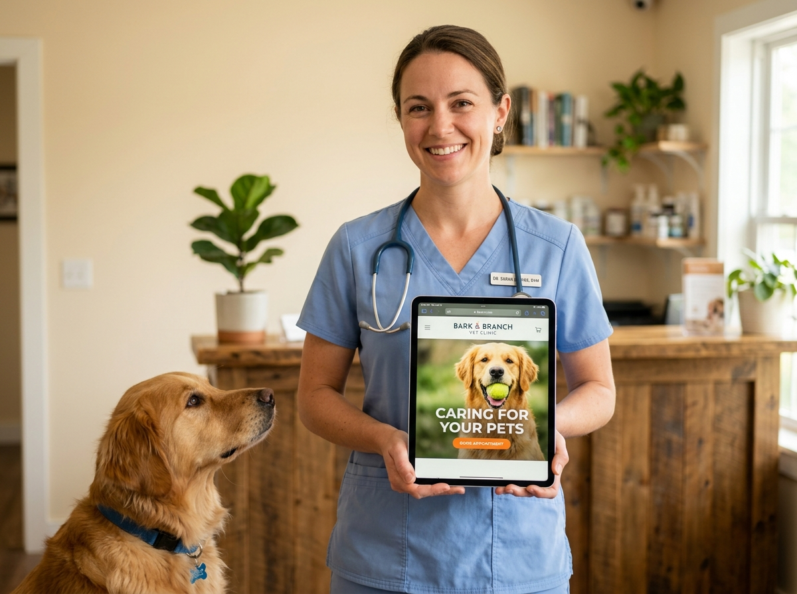

Landing Pages
Una sola página, directa y efectiva, para promocionar un servicio, evento o producto puntual.
San Cristóbal · Táchira · Venezuela
Diseñamos páginas web para negocios en San Cristóbal y tiendas virtuales para vender en toda Venezuela, con diseño profesional, entrega rápida y precios accesibles.
Cotiza por WhatsAppQué hago
Una sola página, directa y efectiva, para promocionar un servicio, evento o producto puntual.
Sitios completos de varias páginas para presentar tu negocio con toda la información que tus clientes buscan.
Tu catálogo completo en línea, con carrito de compra, para vender en toda Venezuela sin depender de un local físico.
Ventajas
Ya seas un negocio pequeño en Táchira o una marca que vende en toda Venezuela, estar en línea marca la diferencia.

Aparece en los primeros resultados cuando alguien busca tu negocio en internet.
Un sitio profesional transmite seriedad y hace que tus clientes confíen antes de comprar.

Tu negocio sigue vendiendo aunque cierres el local — el sitio nunca descansa.

Recibe pedidos de otras ciudades y expande tu alcance más allá de San Cristóbal.
Portafolio

Tienda virtual completa con catálogo por categorías, buscador y carrito de compra — lista para vender en toda Venezuela.
Ver sitio en vivo →Demos por rubro
Ejemplos reales adaptados a distintos rubros, con precios accesibles en toda Venezuela.

Veterinaria Cálido y cercano, para clínicas y consultorios de mascotas. Ver demo →Contacto
Cuéntame sobre tu negocio y te envío una cotización sin compromiso.